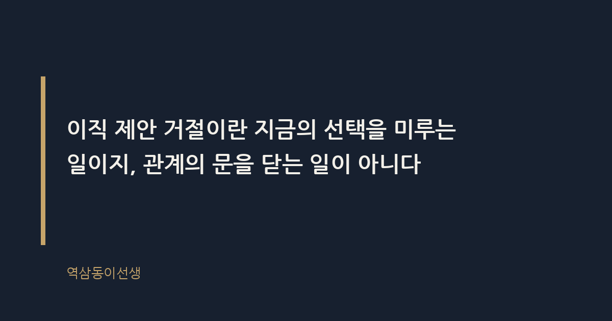
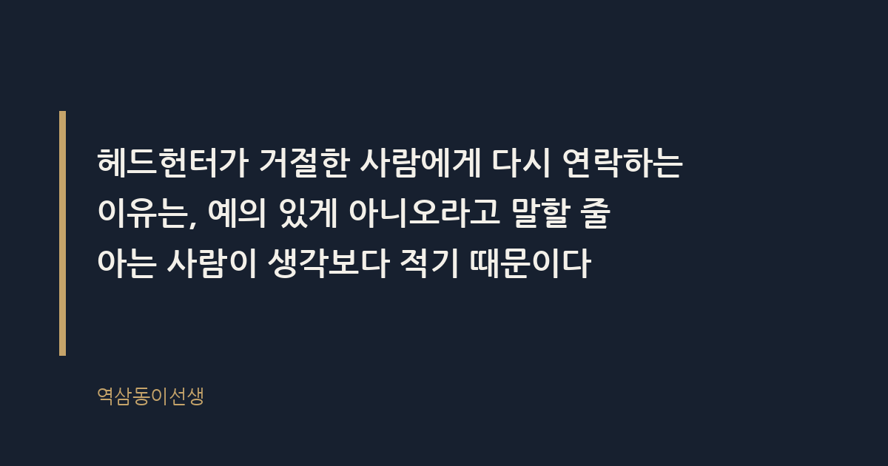

주제 이직 제안을 거절하는 법 (evergreen / career)
제목 후보
메타 설명 이직 제안을 거절할 때 관계까지 지키는 문자 작성법. 상황별 예시 문장과 거절 후에도 다시 연락받는 사람들의 공통점을 정리했다.
라벨 이직제안거절, 이직거절문자, 헤드헌터거절, 이직고민, 커리어관리, 직장인에세이, 퇴사고민, 이직타이밍, 연봉협상, 거절화법, 직장생활팁
실용 자산 예시 문장 모음 — 상황별로 거절 문장을 그대로 복사해 쓸 수 있도록 '이렇게 말한다/이건 피한다' 대비 예시를 표로 제공한다
발행 전 팩트체크
이미지 (Blogger 편집기에 드래그해 넣으세요)
도입부 사진 · ⓒ Alexas_Fotos / Pexels


두 달 전, 예전에 같이 일했던 헤드헌터에게서 연락이 왔다. "요즘 어떠세요, 혹시 움직이실 생각 있으세요?" 짧은 메시지였다. 나는 지금 자리가 좋다고, 다음에 기회가 되면 꼭 연락 달라고 답장을 보냈다. 그 사람은 3년 전에도 나에게 제안을 넣었던 사람이다. 그때도 거절했다. 그런데도 다시 연락이 왔다. 반대로 비슷한 시기에 같은 제안을 받았던 동료는 "관심 없습니다"라는 네 글자로 답을 끝냈다. 그 동료에게는 그 뒤로 어떤 헤드헌터도 다시 연락하지 않았다.
이직 제안을 거절하는 법은 생각보다 단순하지 않다. 거절 자체는 한 줄이면 끝나지만, 그 한 줄이 남기는 인상은 길게 간다. 이직 제안을 거절할 때 중요한 건, '지금은 아니다'라는 말이 '앞으로도 아니다'로 번지지 않게 하는 것이다. 거절의 기술은 결국 관계를 남기는 기술이다.
이직 제안 거절이란 지금의 선택을 미루는 일이지, 관계의 문을 닫는 일이 아니다. 그런데 많은 직장인이 이 둘을 같은 것으로 착각한다. 제안을 거절하면 그 사람과의 연결도 자연스럽게 끊긴다고 생각하는 것이다.
실제로는 반대다. 채용 시장은 생각보다 좁다. 한 산업 안에서 몇 년 일하다 보면 같은 헤드헌터, 같은 인사 담당자를 두세 번씩 다시 만나는 일이 흔하다. 회의실에서 명함을 교환하다가 "어, 저 그때 그 자리 제안하셨던 분 아니세요?"라는 말을 듣는 순간이 생각보다 자주 온다.
그래서 거절할 때의 태도 하나가 그 사람 안에서 나에 대한 평판을 결정한다. 좋은 조건을 받고도 예의 있게 거절한 사람과, 적당히 무시하듯 답한 사람은 그 헤드헌터의 머릿속에 완전히 다른 이름으로 저장된다. 한 인사 담당자는 이런 말을 한 적이 있다. "저희는 엑셀에 후보자 이름을 저장할 때, 조건 말고 '연락이 되는 사람'인지를 먼저 적어둡니다." 조건은 바뀌어도 그 꼬리표는 잘 바뀌지 않는다.
거절 메시지만큼 중요한 게 타이밍이다. 제안을 받고 답을 미루는 기간이 길어질수록, 상대는 그 침묵을 '거절'이 아니라 '무시'로 읽는다. 옆에서 본 바로는 이틀에서 사흘 안에 어떤 식으로든 반응을 주는 사람과, 2주씩 끌다가 짧게 끝내는 사람의 평판이 극명하게 갈린다.
고민이 길어질 수밖에 없는 제안이라도 방법은 있다. "좋은 제안이라 좀 더 생각해보고 싶은데, 이번 주 안에 답을 드려도 될까요?"라고 중간 메시지를 한 번 보내는 것이다. 이 한 줄이 '생각 중인 사람'과 '답 안 하는 사람'을 구분 짓는다. 결정이 늦어지는 건 흠이 아니다. 아무 말 없이 늦어지는 게 흠이다.
옆에서 지켜본 경우를 떠올려 보면, 관계가 끊기는 거절에는 공통점이 있다.
이런 거절이 쌓이면 헤드헌터나 인사 담당자 입장에서는 그 사람을 '제안해도 피드백이 없는 사람'으로 분류한다. 다음 기회가 와도 그 사람 이름은 후보 리스트 맨 아래로 내려간다. 이직 제안을 거절하는 방식 자체가 평판으로 저장되는 이유는, 채용 담당자와 헤드헌터가 사람을 기억하는 방식이 '조건'이 아니라 '태도'이기 때문이다.
거절 문자를 쓸 때 빠뜨리지 말아야 할 요소는 세 가지다. 감사, 이유, 다음 여지. 이 세 가지만 지키면 어떤 상황에서도 관계가 깨지지 않는다.
모든 거절을 메시지로 처리할 수 있는 건 아니다. 최종 면접까지 통과했거나, 상대가 이미 처우 협상까지 공들여 준비한 상황이라면 전화나 짧은 미팅으로 직접 전하는 게 맞다. 메시지로 끝내면 "이 정도밖에 안 되는 사람이었나"라는 인상이 남는다.
실제로 최종 합격 통보를 받은 뒤 조건이 맞지 않아 거절해야 했던 지인은, 문자 대신 담당자에게 전화를 걸어 5분 정도 통화했다. "여기까지 준비해주신 걸 아는데 이렇게 결정하게 돼 죄송하다"는 말 한마디로 시작했다. 그 담당자는 1년 뒤 다른 자리로 다시 연락해 왔다. 공들인 과정일수록, 거절도 공들여 전해야 한다.
실제로 쓸 수 있는 문장을 상황별로 정리했다. 그대로 옮겨 써도 되고, 어투만 바꿔 쓰면 된다.
| 상황 | 이렇게 말한다 | 이건 피한다 |
|---|---|---|
| 헤드헌터가 먼저 연락해온 제안 | "좋은 자리 소개해 주셔서 감사하다. 지금은 움직이기 어려운 시점이라 다음 기회에 꼭 다시 연락 달라" | "관심 없다", 읽고 답장 없이 넘기기 |
| 지인 추천으로 들어온 제안 | "신경 써서 추천해 줘서 고맙다. 다만 지금은 때가 아닌 것 같아서, 조건이 안 맞아서가 아니라 타이밍 때문이라고 분명히 말해두고 싶다" | 이유를 전혀 밝히지 않고 어색하게 넘어가기 |
| 상사가 이직 고민을 눈치챘을 때 | "제안이 있었던 건 맞지만, 지금 팀에서 하고 있는 일을 끝까지 가져가고 싶어서 남기로 했다" | "그런 일 없다"며 부인하기 |
| 최종 합격 후 처우가 안 맞을 때 | "면접 과정에서 보여주신 배려에 감사하다. 다만 제안해주신 조건으로는 이동을 결정하기 어려워 이번엔 정중히 사양하겠다" | 말없이 연락을 끊거나 합격 통보 뒤 잠수하기 |
| 다른 곳과 이미 진행 중일 때 | "솔직히 말씀드리면 다른 프로세스가 더 진행되어 있어 이번엔 함께하기 어렵다. 다음에 꼭 다시 뵙고 싶다" | 거짓 이유를 만들어 둘러대기 |
이 둘을 같은 말투로 처리하면 안 된다. 헤드헌터는 외부 시장이고, 현재 회사는 내가 매일 출근해야 하는 공간이다. 헤드헌터에게는 다음 기회를 열어두는 쪽에 무게를 싣고, 현재 회사 상사에게는 남는 이유를 분명히 하는 쪽에 무게를 싣는다.
퇴사 면담 자리에서 반대로 하는 사람을 여러 번 봤다. 상사에게는 "다른 데서 더 좋은 조건을 받았는데 그냥 남겠다"는 식으로 흔들리듯 말하고, 정작 헤드헌터에게는 단답으로 끊는 경우다. 이러면 상사는 "저 사람 언제든 나갈 사람"으로 보고, 헤드헌터는 "다시 연락할 가치 없는 사람"으로 본다. 양쪽 모두에서 신뢰를 잃는 가장 비효율적인 방식이다.
한 가지 더, 상사에게 거절 사실을 전할 때는 '다른 제안이 있었다'는 사실 자체를 숨길 필요는 없다. 오히려 "제안은 있었지만 지금 하는 일이 더 의미 있다고 판단했다"는 말이 남는 사람에게는 신뢰를, 떠나는 사람에게는 존중을 동시에 남긴다. 숨기려다 나중에 알려지는 쪽이 훨씬 관계를 상하게 한다.
헤드헌터가 거절한 사람에게 다시 연락하는 이유는, 예의 있게 아니오라고 말할 줄 아는 사람이 생각보다 적기 때문이다. 레오나르도 다빈치가 미완성작을 많이 남긴 이유도 비슷하다. 거절은 끝맺음이 아니라 다음 작업을 위한 여백이다. 지금 거절한다고 그 그림이 영원히 끝난 게 아니듯, 지금의 거절도 관계의 끝이 아니다.
거절 후에도 다시 연락받는 사람들을 보면, 이들은 거절을 '관계 관리의 한 장면'으로 다룬다. 답장 속도가 빠르고, 이유가 분명하고, 마지막에 여지를 남긴다. 반면 연락이 끊기는 사람들은 거절을 '빨리 끝내야 할 불편한 일'로 다룬다. 둘의 차이는 메시지 길이가 아니라 태도의 밀도다.
씁쓸하면서도 꽤 인상적인 건, 이 평판이 몇 년 뒤에 복리처럼 돌아온다는 점이다. 3년 전에 예의 있게 거절했던 그 헤드헌터가, 올해 내가 전혀 기대하지 않았던 더 좋은 자리를 들고 다시 연락해 왔다. 거절이 투자였던 셈이다.
Q. 이직 제안을 거절할 때, 이유를 솔직하게 말하는 편인가요 아니면 적당히 둘러대는 편인가요?